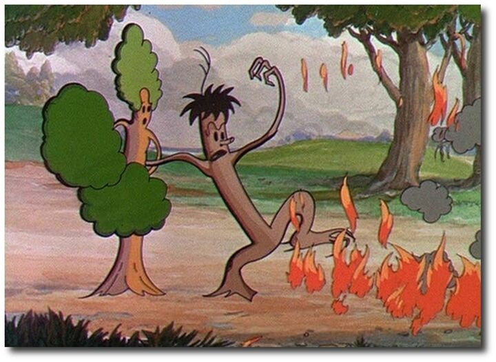

Animated Poetics
Nathan Snow

In this article, Nathan Snow introduces a new concept for understanding computer-animated realism: selective augmentation. The author argues that selective augmentation, as a concept of animated realism, provides insight into the evolution of animation style and its effects on the spectator in the form of a stronger invitation to “mentalize” selectively augmented textures and characters. To demonstrate this point, the author begins by providing an outline of the current debate over animated realism as a concept; that is, can animation, a medium whose technology and practices often exclude it from the debates surrounding indexical reality, make a claim on any manner of realism? Far from being excluded from the realism debate, the author argues that animators often select certain materials or behaviors to highlight through formal techniques such as movement, textural detail, or color, thereby increasing their tangible credibility while simultaneously lessening their photoreality. The balance of cartoon abstraction with enough textural reality to encourage mentalizing and internal simulation in audience members forms the heart of modern computer-generated poetics, wherein spectators are encouraged through the formal properties of the animation to luxuriate in hyperreal depictions of fur, scales, textures, and detail that, while non-indexical, nevertheless grant audiences an opportunity to renew their appreciation for the everyday material spaces they inhabit. The author concludes by demonstrating how selective augmentation can provide critics and audiences with new insight into the effects of the formal properties of animation through a discussion of film theorists Siegfried Kracauer and William Brown. Because selective augmentation can offer viewers non-indexical (or non-anthropocentric) perspectives on reality in a way that nevertheless feels tangibly real, animation provides a unique opportunity to both redeem the material world from obscurity and grant audiences a chance at experiencing the sublime in media.
About the Author
Nathan Snow
Nathan S. Snow is a 2018 graduate in the Texts and Technology program and an Assistant Professor of Film and Media Studies at Dixie State University in southern Utah. His dissertation offers historically contextual definitions for different forms of animation and explains the critical significance of the shift from traditional to 3D computer generated techniques in terms of its affect on the spectator. As such, his research focuses on film history and animation specifically as they relate to theories of genre and spectatorship, identifying and expounding on the intersection between viewer and viewed. Additionally, Nathan has worked in video and animation production for over 10 years and has published professional film and video game criticism for over 8 years. He recently contributed a book chapter on how new media can be used to make higher education more effective for non-traditional students.